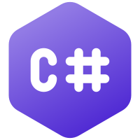

Java é uma linguagem de programação orientada a objetos desenvolvida na década de 90 por uma equipe de programadores chefiada por James Gosling, na empresa Sun Microsystems, que em 2008 foi adquirido pela empresa Oracle Corporation. Diferente das linguagens de programação modernas, que são compiladas para código nativo, Java é compilada para um bytecode que é interpretado por uma máquina virtual (Java Virtual Machine, abreviada JVM). A linguagem de programação Java é a linguagem convencional da Plataforma Java, mas não é a sua única linguagem. A J2ME é utilizada em jogos de computador, celular, calculadoras, ou até mesmo o rádio do carro.
Python é uma linguagem de programação de alto nível, interpretada de script, imperativa, orientada a objetos, funcional, de tipagem dinâmica e forte. Foi lançada por Guido van Rossum em 1991. Atualmente, possui um modelo de desenvolvimento comunitário, aberto e gerenciado pela organização sem fins lucrativos Python Software Foundation. Apesar de várias partes da linguagem possuírem padrões e especificações formais, a linguagem, como um todo, não é formalmente especificada. O padrão na pratica é a implementação CPython.

C# é uma linguagem de programação, multiparadigma, de tipagem forte, desenvolvida pela Microsoft como parte da plataforma .NET. A sua sintaxe orientada a objetos foi baseada no C++ mas inclui muitas influências de outras linguagens de programação, como Object Pascal e, principalmente, Java. O código fonte é compilado para Common Intermediate Language (CIL) que é interpretado pela máquina virtual Common Language Runtime (CLR). C# é uma das linguagens projetadas para funcionar na Common Language Infrastructure da plataforma .NET Framework.
R é uma linguagem de programação multi-paradigma orientada a objetos, programação funcional, dinâmica, fracamente tipada, voltada à manipulação, análise e visualização de dados. Foi criado originalmente por Ross Ihaka e por Robert Gentleman no departamento de Estatística da Universidade de Auckland, Nova Zelândia. Atualmente é mantido por uma comunidade de colaboradores voluntários[4] que contribuem com código fonte da linguagem e com a expansão de funcionalidades por bibliotecas.